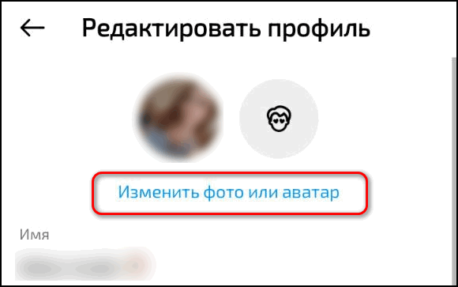
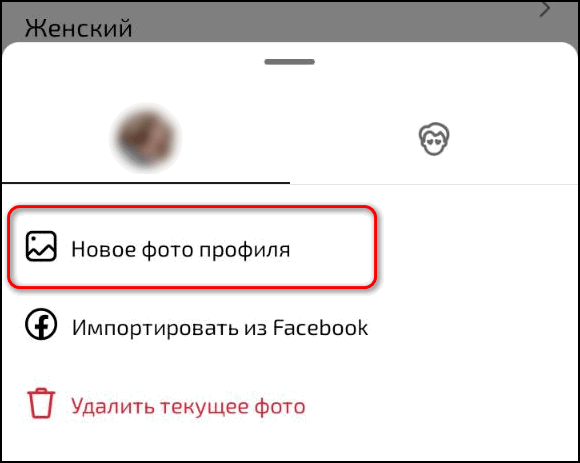
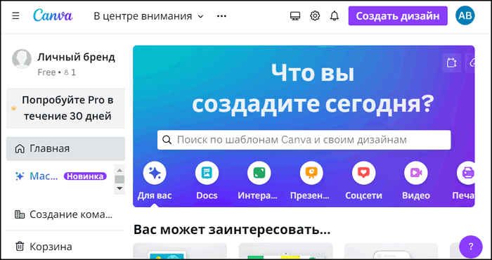
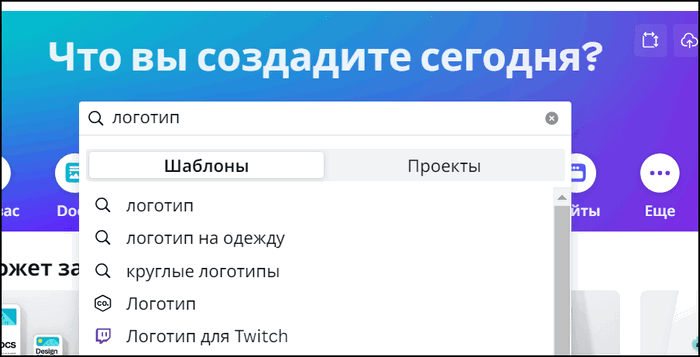
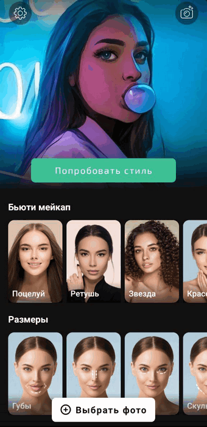
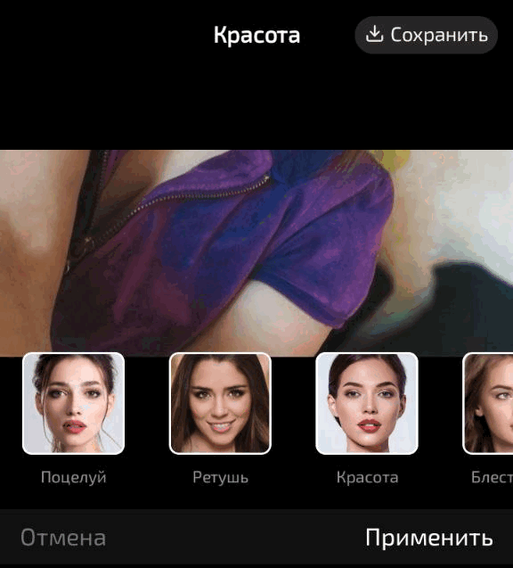
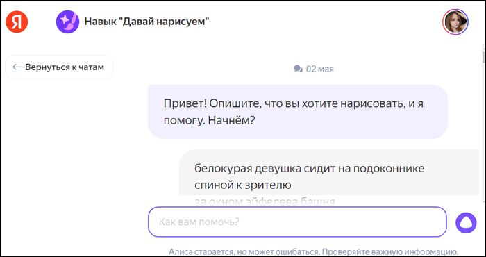

Меняем аватарку в Инстаграме: ТОП-5 способов

В Инстаграме* поменять аватарку возможно несколькими способами: с помощью виртуального персонажа, используя фото из Галереи или создать с помощью камеры, сгенерировать с помощью приложения или нейросети.
Требования к аватаркам в Инстаграме*
Прежде чем изменить аватар в Инстаграме*, владелец страницы должен убедиться в том, что подготовил картинку в соответствии с требованиями социальной сети. Для создания хорошей аватарки:
| Характеристики | Хорошо | Лучшее |
| Разрешение | 320х320 | 1000х1000 |
| Изображение | Нейтральная картинка | Свое фото |
| Ссылки | Запрещены | Запрещены |
| Формат | JPG | PNG |
Максимальный размер файла – 500 мб, а минимальный – от 2 Мб. Поэтому при загрузке аватарки автор может столкнуться с ошибкой, которая не позволит добавить новый снимок.
Изменить аватар не так сложно:
- Открыть свой аккаунт – нажать по «Фото профиля».

- Вариант: «Сделать снимок» или «Загрузить из Галереи».
- Создать новое фото – «Добавить».

- Подтвердить размещение в профиле.
Инстаграм* предложит отредактировать снимок: выбрать фильтр и область, которая будет отображена.
Еще в социальной сети есть дополнительный вариант создания главного фото – через индивидуального персонажа. Там же, в разделе «Добавить фото», можно указать «Создать аватар» и перейти к редактированию 3D-человечка. Пользователю предложено сделать снимок, чтобы Инстаграм* сам сделал персонажа, учитывая телосложение, цвет лица, глаз и волос. Далее, владелец страницы может редактировать человечка, настроив параметры. Кроме того, что этот персонаж будет отображен на аватарке, его можно использовать в качестве стикера для Историй. На выбор предложены стандартные позы, которые отображают эмоции, а также есть анимированные картинки.
Идеальный вариант для коммерческого профиля
Коммерческие аккаунты делятся на те, которыми руководит один или несколько человек. Так, в профиле компании по изготовлению сладостей не стоит добавлять свое фото. В экспертных, блогах и аккаунтах авторов – свои снимки допустимы. Что стоит использовать для коммерческого профиля:
- логотипы. Созданные с помощью приложений или онлайн-сервисов;
- картинки или фотографии, отображающие смысл деятельности.
Например, мастер маникюра может использовать лучшую из своих работ. Или сделать аватарку с помощью сервиса Canva, где можно создать изображение с соответствующими параметрами. Создадим логотип для кондитерской:
- Зайти в Canva – авторизоваться любым удобным способом.
- Перейти к шаблонам – вписать в поиске «Логотип».

- Выбрать один из подходящих бесплатных вариантов или перейти к созданию индивидуального дизайна.
- Заполнить фон – в разделе «Графика» найти стикеры.
- С помощью инструмента «Текст» добавить название.

- Кнопка «Поделиться» в правом верхнем углу – Скачать.
- Подтвердить загрузку.
Canva можно скачать на смартфон (установив из Play Market или AppStore) или воспользоваться компьютерной версией. При выборе стикеров нужно обращать внимание на их доступ: платный, бесплатный или по подписке. Выбирая одно тематическое изображение, сервис будет подсказывать другие похожие или входящие в эту же коллекцию.
Свое фото: редактирование и обрезка
Свой снимок можно загрузить из Галереи или создать в Инстаграме*. Чтобы сделать свое фото красочным и интересным, нужно использовать приложения для редактирования. Популярная утилита среди блогеров и медийных личностей – Persona и FaceTune, Как воспользоваться Persona:
- Загрузить и установить приложение с помощью Play Market или AppStore
- Открыть – выбрать снимок для редактирования.

- Перейти к инструменту «Красота» - подобрать фильтр.

Или:
- В дополнительном меню выбрать: «Арт».
- Указать любой художественный фильтр.
В приложении можно сделать цветокоррекцию, удалить ненужные элементы заднего или переднего плана через инструмент «Ластик», изменить прическу и цвет волос, глаз. При необходимости изменения можно отменить, нажав снизу по стрелочке «Назад». По завершению – сохранить снимок и установить в Инстаграме*. В самой социальной сети есть встроенный редактор, который содержит 30 интересных фильтров. Можно указать интенсивность и обрезать до нужного размера.
Подойдут ли картинки на аватарку
Настроить аватар в Инстаграме* несложно, если есть свое фото. Но если пользователь не желает делиться личным снимком, социальная сеть допускает размещение картинок. Какие изображения допустимы:
- не содержащие оскорбительных выражений и картикатурных;
- отсутствуют ссылки и длинный текст;
- картинка не защищена авторским правом.
Можно использовать картинки, сгенерированные нейросетью – на это не распространяется авторское право. Также поставить на аватар в Инстаграме* можно изображения, найденные в Пинтересте.
Генерируем через нейросеть
С помощью нейросети можно создавать любые изображения: от человека до фантастических пейзажей. Для генерации доступна нейросеть от Яндекса – Алиса GPT Как сделать интересную картинку для аватарки в Инстаграм*:
- Зайти в диалог с Алисой – написать в диалоге «Давай нарисуем».
- Появится уведомление: «Навык запущен» - описать картинку, которую хочет получить пользователь.

- Подождать, пока будет сгенерировано – сохранить на компьютер или телефон.
Полученный результат будет в разрешении webp и чтобы его конвертировать в png с компьютера, достаточно указать после «.» нужный формат. Также, есть приложение Шедеврум, которое поддерживает генерацию разных картинок по запросам пользователя. А в Телеграме можно запустить TurboText-бота, где также есть режим с генерацией изображений.
Приложения для аватарок
Настроить фото профиля в Инстаграм* можно с помощью приложений, направленных на редактирование снимков или создание новых картинок. Как это работает:
- Пользователь загружает свое фото.
- Приложение предлагает варианты обработки.
- После редактирования снимок можно сохранить на смартфон.
Например, приложение Avatarro, куда можно загрузить свое фото и получить необычный результат от нейросети:
- Скачать на Айфон или Андроид, воспользовавшись магазинами контента.
- Открыть – выбрать: «Загрузить фото из Галереи» или «Сделать снимок» для создания мгновенного изображения.
- Подобрать фильтр для снимка – подождать пока завершится редактирование.
- Сохранить на смартфон.
Еще сделать аватар поможет небольшая игра-приложение Zepeto, где пользователь волен создавать необычных персонажей и украшать их аксессуарами, новой одеждой. Тот же принцип у чата IMVU, где также есть инструменты для редактирования своего персонажа и его настройки. В таких чатах нужно сделать скриншот, чтобы в дальнейшем разместить изображение на аватарку.
Как полностью удалить аватарку в Инстаграме*
Кроме того, что можно поставить аватар в Инстаграме* - его также просто удалить. Для этого владельцу страницы нужно нажать по текущему изображению профиля и вместо функции «Изменить» выбрать «Удалить». Появится предупреждающее сообщение, где нужно дать согласие на удаление картинки.
После этого в профиле отобразится иконка с человечком или персонаж, который был некогда создан владельцем аккаунта.
Не устанавливается фото: в чем проблема
При загрузке изображения могут возникнуть небольшие проблемы, связанные с:
- некорректным подключением в сети;
- неправильным форматом;
- низким качеством картинки;
- сбой при изменении или редактировании.
Например, владелец страницы редактировал и подгонял по размеру свое фото, как приложение закрылось и показало ошибку. В этом случае проблему можно решить переустановкой Инстаграма*. Также стоит проверить соответствие своего устройства новым приложениям и последним обновлениям. Пользователи с версией Android 7.0 постепенно теряют поддержку новых версий социальной сети. Неправильный формат или большой объем будет указан в предупреждающем уведомлении. Предположим, что владелец хотел установить картинку в высоком разрешении. Но приложение показано ошибку и изображение не было изменено. В этом случае нужно использовать онлайн-сервисы или утилиты для сжатия картинки. Уменьшив размер, пользователь получит меньший размер файла и сможет установить картинку в профиль.